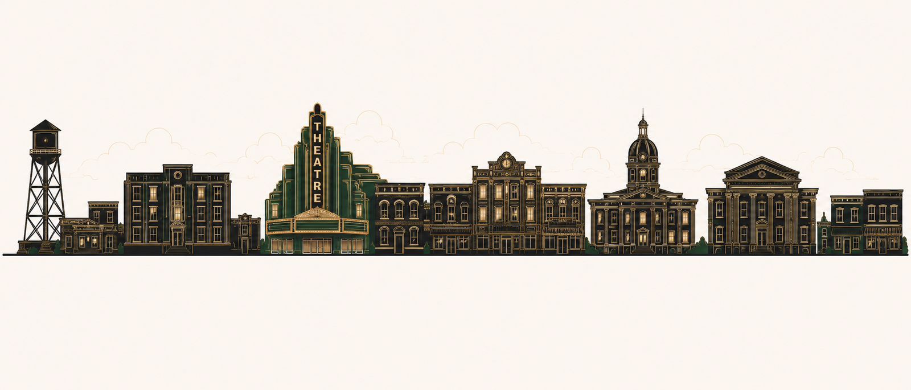

SHARP is a North Carolina nonprofit organization dedicated to historic preservation, adaptive reuse, and community revitalization throughout underserved and economically distressed communities.
Our mission is to preserve architectural heritage, encourage sustainable rehabilitation, support local economic growth, and restore vitality to historic downtowns and commercial corridors across North Carolina.
Current Status
SHARP is currently organizing operations, developing preservation initiatives, and pursuing federal 501(c)(3) tax-exempt status.
Focus Areas
Historic Downtowns
Revitalizing traditional commercial districts and Main Street corridors.
◇
Art Deco Architecture
Preserving early twentieth-century buildings, theaters, storefronts, and civic landmarks.
◇
Adaptive Reuse
Helping historic structures return to productive community use.
◇
Sustainable Restoration
Encouraging salvage, reuse, and responsible rehabilitation practices.
◇

Contact
SHARP NC
PO Box 567
Kitty Hawk, NC 27949
Email: info@sharpnc.org